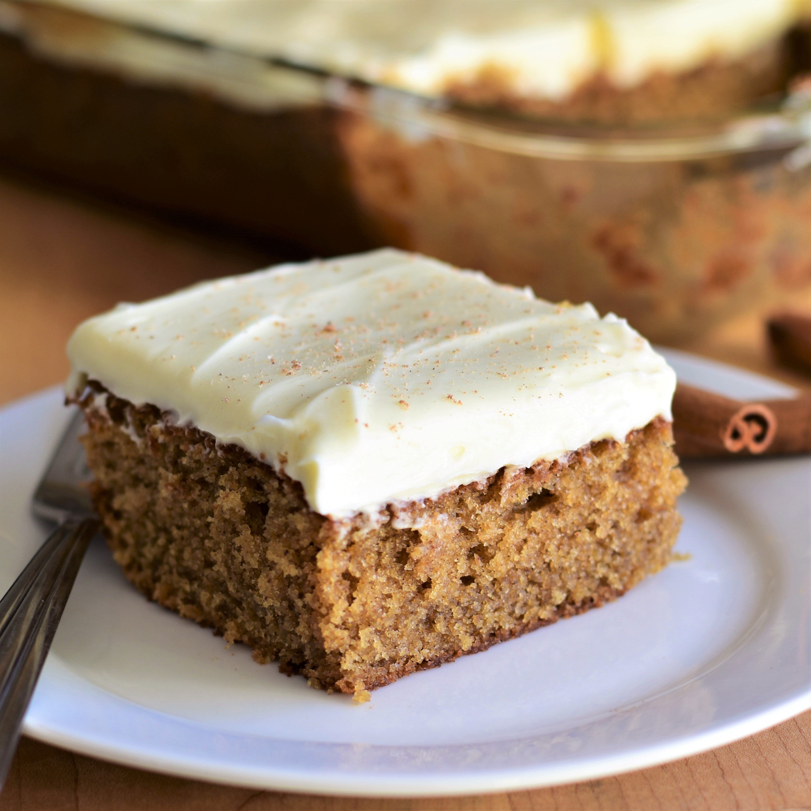

Kim's Buttermilk Spice Cake

Description
A recipe inspired by her mom's old cookbook, Kim brings it back to life with
her version of the cake. Paired with the perfect amount of sweetness and a strong
spice flavor, this cake is a sweet addition for the holiday season!
Ingredients
Cake:
- 2 cups all-purpose flour
- 2 teaspoons ground cinnamon
- 1 1/2 teaspoons baking powder
- 1 teaspoon baking soda
- 1 teaspoon salt
- 1/2 teaspoon ground cloves
- 1/2 teaspoon ground nutmeg
- 1/2 teaspoon ground allspice
- 1 cup unsalted butter, softened
- 1 cup firmly packed dark brown sugar
- 1/2 cup white sugar
- 3 large eggs, at room temperature
- 1 teaspoon vanilla extract
- 1 1/2 cups buttermilk, at room temperature
Cream Cheese Frosting:
- 1/2 cup unstaled butter, at room temperature
- 1 (8 ounce) package cream cheese, at room temperature
- 2 1/2 cups confectioners' sugar
- 1 teaspoon vanilla extract
- 1/8 teaspoon salt
- 2 tablespoons heavy cream
Steps
- Preheat the oven to 350 degrees F (175 degrees C). Grease a 9x13-inch
baking pan.
- Whisk together flour, cinnamon, baking powder, baking soda, salt, cloves,
nutmeg, and allspice in a bowl until well combined.
- Cream together butter, brown sugar, and white sugar in a large bowl with
an electric mixer until light and fluffy. Beat in eggs, 1 at a time, mix well
after each addition. Mix in vanilla extract. Add in half of the flour mixture,
and stir until just combined. Pour in buttermilk, and mix until just combined.
Add in remaining flour mixture and mix until just combined. Pour batter into
the prepared pan and spread into an even layer.
- Bake in the preheated oven until the middle of the cake springs back lightly
when touched, 40 to 45 minutes. Remove from the oven and allow the cake to cool
completely before frosting.
- For the frosting, cream butter in a large bwol until smooth. Add cream cheese
and beat until thoroughly combined. Mix in confectioners' sugar, 1 cup at a time,
and beat until smooth after each addition. Mix in vanilla and salt. Add in heavy
cream and beat until frosting is smooth, about 2 minutes. Frost cooled cake is
desired.